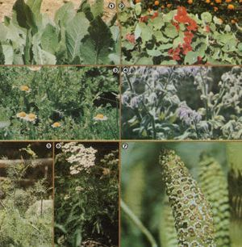

[1] Costmary leaves will help keep your cupboards free of silverfish. [2] Orange nasturtiums repel cucumber beetles, aphids, and Mexican bean beetles. [3] Chamomile flowers will ,!;race your yard and drive away pests. [4] Savory borage can be sown with tomatoes to deter hornworms. [5] Will will also help protect a tomato crop from horn worms. [6] A liquid fertilizer ""tea"" made from yarrow, a roadside herb, trill benefit all plants. [7] Dried and crushed horsetails can be used as a high-potency powder repellent for slugs